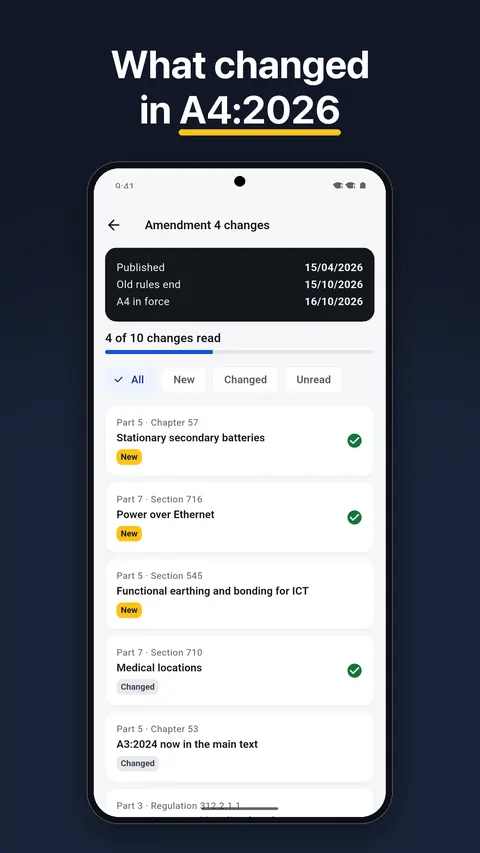

Not a government app. Sparkwise is an independent study app made by Kodfu Bilisim. It is not affiliated with or endorsed by the IET, BSI, City & Guilds, ECS or JIB. It does not contain the real exam questions and never reproduces BS 7671 text.
What changed in A4:2026: free 18th Edition practice questions
What A4:2026 brought in: batteries, functional earthing, PoE, medical locations, PNB, AFDD wording and the new model forms.
10 original questions from the Sparkwise app, each with the answer and an explanation. Open book: have your copy of BS 7671:2018+A4:2026 ready and look each answer up, as you would in the exam. No sign-up, nothing saved. These are not the real exam questions: no app or website can show you those.
Question 1 · Choose one answer
On what date was BS 7671:2018+A4:2026 published?
- 15/01/2026
- 15/04/2026
- 15/10/2026
- 01/01/2027
Show the answer
Answer B: 15/04/2026
A4 was published on 15/04/2026 and could be used immediately. 15/01/2026 was the sign-off announcement and 15/10/2026 the withdrawal of the old version.
Where to look: IET and BSI announcement of A4:2026
Question 2 · Choose one answer
Which City & Guilds qualification number is aligned with BS 7671:2018+A4:2026?
- 2382-18
- 2382-22
- 2382-26
- 2391-52
Show the answer
Answer C: 2382-26
The 2382-26 award covers BS 7671:2018+A4:2026. 2382-22 covered A2:2022, and 2391-52 is an inspection and testing qualification.
Where to look: City & Guilds 2382-26 qualification handbook
Question 3 · Choose one answer
A4 added Chapter 57 on stationary secondary batteries. In which Part of BS 7671 does it sit?
- Part 4, Protection for safety
- Part 5, Selection and erection
- Part 7, Special installations
- Part 8, Functional requirements
Show the answer
Answer B: Part 5, Selection and erection
Chapter 57 follows Chapters 51 to 56 in Part 5, which covers selection and erection of equipment, including other sources such as generators.
Where to look: Part 5 · Chapter 57 (A4)
Question 4 · Select TWO answers
Which TWO of these were introduced by Amendment 4? Select TWO.
- Section 716 Power over Ethernet
- Chapter 57 Stationary secondary batteries
- Regulation 411.3.4 RCDs for domestic lighting
- Section 722 Electric vehicle charging
Show the answer
Answer A: Section 716 Power over Ethernet, B: Chapter 57 Stationary secondary batteries
Sections 716 and Chapter 57 are new in A4. RCDs for domestic lighting date from 2018 and Section 722 existed long before A4.
Where to look: Chapter 57 · Section 716 (A4)
Question 5 · Choose one answer
What did A4 change about the AFDD requirement in Regulation 421.1.7?
- Made AFDDs mandatory in every dwelling
- Renamed 'higher-risk' as 'high-rise' buildings
- Extended AFDDs to all lighting circuits
- Removed AFDDs from care homes and HMOs
Show the answer
Answer B: Renamed 'higher-risk' as 'high-rise' buildings
The wording changed to high-rise residential buildings. The scope stayed the same: HRRBs, HMOs, purpose-built student accommodation and care homes.
Where to look: Reg 421.1.7 (A4)
Question 6 · True or false?
Under A4, an FI (further investigation) observation on its own makes an EICR unsatisfactory.
- True
- False
Show the answer
Answer B: False
Under A3 it did, but under A4 FI is advisory and does not affect the overall assessment.
Where to look: Appendix 6 (A4) · EICR notes
Question 7 · Choose one answer
What may now be appended to an A4 EICR to support observations?
- Copies of previous installation certificates
- Photographs and/or thermographic images
- The client's signed acceptance of each code
- Manufacturer data for every protective device
Show the answer
Answer B: Photographs and/or thermographic images
A4 allows photos and thermal images to be attached to support observations.
Where to look: Reg 653.2 (A4)
Question 8 · Choose one answer
A consumer unit is replaced in 2026. Under A4, which document must NOT be used to certify the work?
- An Electrical Installation Certificate
- An Electrical Installation Condition Report
- A full EIC with its two schedules
- An EIC with design and build signatures
Show the answer
Answer B: An Electrical Installation Condition Report
The A4 notes state an EICR is not for certifying a consumer unit replacement; an EIC is required.
Where to look: Appendix 6 (A4) · EICR notes
Question 9 · Choose one answer
How did A4 change the treatment of buried armoured cables in the current-carrying capacity tables?
- Buried cables were removed from the tables
- Direct-buried and ducted cables rated separately
- All buried cables now need 16 mm² minimum
- Buried cables no longer take rating factors
Show the answer
Answer B: Direct-buried and ducted cables rated separately
A4 revised the buried cable ratings so direct-in-ground and ducted installations are treated separately.
Where to look: Appendix 4 (A4) · buried cable ratings
Question 10 · Choose one answer
A job was designed to A2:2022 before 15/10/2026 and finished afterwards. What is the generally accepted approach?
- It must be redesigned to A4 before handover
- It may be finished to its design version by agreement
- It cannot be certificated after 15/10/2026
- It must be certificated to A3:2024 only
Show the answer
Answer B: It may be finished to its design version by agreement
Work designed to the earlier version may be completed to it by agreement; the client should be told and the version recorded.
Where to look: BS 7671 Introduction · transition guidance
You’ve seen 10 of 25 questions in this topic
The Sparkwise app has all 25, each with an explanation. Across the whole 18th Edition there are 538 questions in 16 topics, plus timed 60-question mock exams of 2 hours.
3 of them are free in the app, the rest come with Pro. Sparkwise Pro is £12.99 one-off and unlocks every question, every mock exam and every worked solution for both exams. No subscription.
Android now; iPhone version not yet available.
Revision notes
Dates and status
Amendment 4 to BS 7671:2018 was signed off by the IET and BSI in January 2026 and published on 15/04/2026 with an orange cover, so it is often called the Orange Book. It could be used straight away. The previous version, BS 7671:2018+A2:2022 with its 2023 corrigendum and Amendment 3:2024, was withdrawn on 15/10/2026, leaving A4 as the only current version. A3 is incorporated into the A4 text. The City & Guilds 2382-26 exam is based on BS 7671:2018+A4:2026.
New chapters and sections
A4 added several new parts to the standard. Chapter 57 covers stationary secondary batteries used to store and supply energy within an installation. Section 545 covers functional earthing and functional equipotential bonding for ICT equipment and systems. Section 716 covers Power over Ethernet. In Part 8, Chapter 81 sets out energy efficiency requirements in place of the former Appendix 17. Section 710 on medical locations received a major revision.
Earthing: protective neutral bonding
A4 recognises protective neutral bonding (PNB) for the first time, with a new figure and requirements alongside the description of TN-C-S systems. In PNB the PEN conductor is earthed at one point close to the consumers, and network guidance limits it to a small number of consumers, so check with the DNO. The model forms now split TN-C-S into two choices, TN-C-S (PME) and TN-C-S (PNB), on the EIC, the EICR and the minor works certificate, so the inspector records which arrangement is present.
AFDD wording
The AFDD requirement in Regulation 421.1.7 now refers to high-rise residential buildings (HRRBs) instead of higher-risk residential buildings. The substance did not change: AFDDs are still required on single-phase AC final circuits supplying socket-outlets up to 32 A in HRRBs, houses in multiple occupation, purpose-built student accommodation and care homes, and recommended elsewhere. For this purpose an HRRB is over 18 m tall or has more than six storeys. The model forms gained AFDD fields.
EICR changes
The A4 Electrical Installation Condition Report changed how observations affect the outcome. Only C1 (danger present) and C2 (potentially dangerous) make the overall assessment unsatisfactory. C3 (improvement recommended) and FI (further investigation) are now advisory and do not, whereas under A3 an FI made the report unsatisfactory. The words 'without delay' were removed from FI. Observations are listed in two tables, and the report has separate signatures for the person who inspected and tested and the person who authorised it for issue.
Forms and guidance for recipients
The A4 model forms add guidance for the person receiving a report. RCDs should be tested six-monthly using the test button; AFDDs with a manual test facility should also be tested six-monthly, following the manufacturer's instructions; and SPD status indicators should be checked. Photographs or thermal images may be appended to support observations. An EICR must not be used to certify a consumer unit replacement: that work needs an Electrical Installation Certificate. Minor works continuity results are labelled r1, rn and r2.
Other notable changes
A4 revised ratings for buried cables so that cables laid directly in the ground are treated differently from cables in ducts. It clarified which cables may be used in protected escape routes, treating cables within a fire-resisting enclosure as outside the route, and linked firefighter's switches to the building's fire strategy. Functional bonding conductors must not be identified with green-and-yellow. Existing installations built to earlier editions are not automatically unsafe, and work designed before 15/10/2026 is certificated to the version it was designed to, as agreed with the client.
More 18th Edition topics
- Previous: Cable and fault calculationsRating factors, voltage drop, maximum Zs, prospective fault current and adiabatic checks, worked step by step.
- Next: Scope, object and fundamental principlesWhat BS 7671 covers and excludes, its legal status, departures, and the fundamental principles of Chapter 13.
- 18th Edition exam guideFormat, rules, booking and how to prepare
Practise both exams in the Sparkwise app
927 original questions across every Part of BS 7671:2018+A4:2026 and every ECS HS&E syllabus area, timed mock exams in the real format, worked solutions for calculations and explanations that show where to look in the book.
- 18th Edition: 538 questions, 60-question mock exams in 2 hours, a maximum Zs calculator and a guide to Amendment 4
- ECS HS&E: 389 questions and 50-question mock tests in 30 minutes
- Works offline. No ads, no account, no data collected.



Free: two full topics in each exam, three questions in every other topic, one full mock exam for each exam, the maximum Zs calculator and checklists.
Sparkwise Pro, £12.99 one-off: every question, every mock exam and every worked solution, for both exams. No subscription.
Android now; iPhone version not yet available. Sparkwise helps you prepare; it cannot promise a pass.